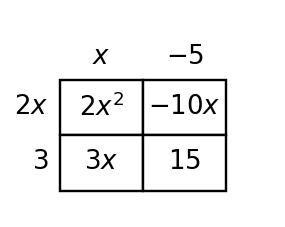

8.
Factor $y=x^2+x-6$ to find the zeros, then sketch it on the blank coordinate plane using the intercepts.

Use these problems to compare linear, quadratic, and exponential relationships from different representations. Focus on using evidence to identify function families and long-term behavior.
Label each equation as linear, quadratic, or exponential.
Compute the first differences for the table.
| $x$ | 0 | 1 | 2 | 3 | 4 |
|---|---|---|---|---|---|
| $y$ | 10 | 16 | 22 | 28 | 34 |
A company has two revenue models: $A(t)=500+80t$ and $B(t)=500(1.12)^t$. Find each output at t=4 and write one sentence comparing the change patterns.
Use the table to choose a family and write a supporting evidence sentence.
| Input | 0 | 1 | 2 | 3 | 4 |
|---|---|---|---|---|---|
| Output | 9 | 14 | 21 | 30 | 41 |
Factor $4x^3-9x$ in two steps. Name the special pattern applied after removing the GCF.
Write the missing middle term so the trinomial is a perfect square: $49x^2+\_\_+1$.
For $y=2x^2-7x+3$, give the y-intercept and the two x-intercepts. Show how factoring supports the x-intercepts.
Factor $y=x^2+x-6$ to find the zeros, then sketch it on the blank coordinate plane using the intercepts.
The x-intercepts of $y=2x^2-16x+30$ are $(3,0)$ and $(5,0)$. Find the vertex and explain how symmetry helps.
The expression $2x^2-7x+15$ and the area model are supposed to represent the same product. Find the mismatch, explain how you know, and revise the incorrect cell.

Factor $12x^2+30x$ in two different first steps: one using a common factor of $6x$ and one using a common factor of $3x$. Compare the results and explain why one final answer is considered completely factored.
A student models a kicked ball with $h(t)=(t-2)(t-8)$. The situation should have height positive between launch and landing. Revise the equation so the height is positive between the zeros, and explain your reasoning.
Identify $a$, $b$, and $c$ for each equation.
State the quadratic formula.
Solve or interpret the quadratic situation for Completing the Square. Show the algebra that supports your answer.
Complete the square to solve $x^2-4x-12=0$.
Structure Analysis. Analyze the quadratic evidence for Choosing and Defending Solution Methods. Write a conclusion and justify it with algebraic or graphical evidence.
Analyze $y=(x-4)^2+6$. Without expanding first, decide whether the equation $0=(x-4)^2+6$ has real solutions and justify.
Which family has a constant ratio in its outputs: linear, quadratic, or exponential?
A table has first differences 5, 5, 5. Which function family does it suggest?
For $y=3(2)^x$, state the y-intercept and multiplier.
Factor: $2x^2+10x$.